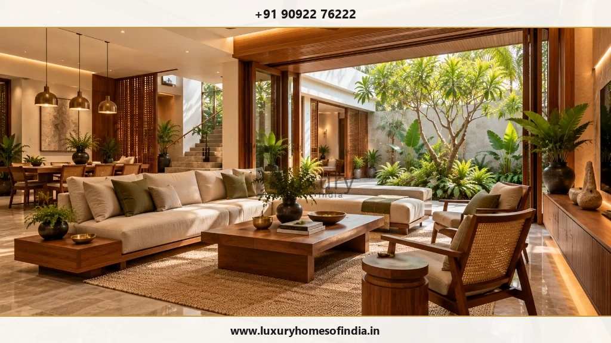

High-End Interior Design in Chennai
Thoughtful residential interiors, shaped around the way you live.
Key Takeaways: High-End Residential Interior Design
- Architectural Flow & Connections: True luxury interior design harmonizes room proportions, natural daylighting, and spatial circulation with the home's broader architecture.
- Cohesive Material Palette: Evaluating physical samples of teak, natural marble, brass accents, and woven reed in local Chennai lighting ensures long-term visual balance.
- Bespoke Joinery & Storage: Custom wardrobes, media units, and kitchen cabinetry must be custom-engineered to household routines rather than replicating catalog photos.
- Integrated Service Interfaces: Pre-coordinating ceiling AC duct depths, recessed architectural lighting, and smart automation provisions prevents post-installation conflicts.
A well-designed home feels connected. Materials, furniture, lighting, proportions and architectural details work together to create spaces that feel personal, comfortable and visually balanced.
Luxury Homes of India brings architectural thinking and interior considerations into the planning of residential spaces. If you are exploring high-end interior design in Chennai, start with what matters to you: the atmosphere you want to create, the way your family uses each room and the details that will make the home feel distinctly yours.
Discuss Your Interior Vision
Connect with Luxury Homes of India interior design team to outline your spatial requirements and receive a personalized proposal.

Design that goes beyond decoration
An interior should support everyday life before it becomes a visual statement.
How people move through a room, where they sit, what they store and how they use natural and artificial light all influence the design. Decorative choices work best when these practical foundations are considered first.
A residential interior brief can cover:
- Overall Character & Atmosphere: Establishing a calm, cohesive design identity tailored to your lifestyle.
- Living & Entertaining Zones: Spatial layouts for family routines and social entertaining.
- Private Suite Sanctuary: Restful bedroom quarters designed for acoustic comfort and privacy.
- Furniture Circulation & Storage: Ergonomic clearances, walking routes, and built-in storage solutions.
- Material Palette & Maintenance: Selecting durable, natural materials suited to coastal Chennai weather.
- Layered Lighting Scheme: Ambient, task, and accent lighting tailored to room activities.
- Electrical & Automation Controls: Concealed power provisions, AV cabling, and smart home scenes.
- Retained Belongings: Integrating cherished heirlooms or artwork seamlessly into new schemes.
The objective is a home with a coherent identity, rather than a collection of unrelated design features.
Create a consistent design language
Different rooms can have different moods while still feeling part of the same home. A considered palette, consistent proportions and carefully resolved details help connect entrance areas, living spaces, bedrooms and private rooms.
A considered material palette
Choose complementary materials rather than treating every surface independently. Balance statement finishes with quieter elements, and evaluate samples in the lighting conditions in which they will be used.
Furniture suited to the space
Furniture should relate to the room's dimensions and architecture. Comfortable circulation, suitable proportions and practical access matter as much as appearance.
Lighting that shapes the experience
Consider general illumination, task lighting and feature lighting together. Coordinate lighting positions with furniture, joinery, ceiling details and the activities each space supports.
Details that connect
Review transitions between flooring, walls, ceilings, cabinetry and other built-in elements. Consistent detailing helps the interior feel resolved.
Residential interiors for the way you use each room
Living and dining areas
Plan seating, movement and lighting together. Consider how the spaces function during everyday use and when guests visit. Furniture arrangements should encourage conversation without obstructing access.
Bedrooms and private suites
Create a quieter atmosphere through practical layouts, appropriate storage and considered lighting. Coordinate wardrobes, bedside arrangements and adjoining spaces around the occupants' routines.
Kitchens
Bring cabinetry, appliances, lighting and services into one coordinated plan. Review workflow, storage, ventilation, cleaning and maintenance requirements before finalising finishes.
Bathrooms
Balance appearance with technical detailing. Fittings, lighting, waterproofing, drainage and maintenance access need to be coordinated rather than treated as separate installation decisions.
Workspaces and personal rooms
Design around the activity the room supports. Lighting, acoustics, equipment placement and storage can be as important as the visual style.

Bespoke furniture and joinery
Custom furniture should solve a specific design requirement rather than simply reproduce a reference image.
A wardrobe needs an internal arrangement suited to the owner's belongings. A dining table needs comfortable clearance around it. A media unit must accommodate equipment, cabling and ventilation.
LHI's published service information describes luxury interior execution and custom furniture. The exact design, supply and installation responsibilities should be confirmed in the project proposal.
Before approving bespoke furniture or joinery, review:
- Exact dimensions and room placement clearances.
- Approved wood species, veneer grades, stone slabs, and physical samples.
- Hardware mechanism specifications (soft-close slides, hinges, handles).
- Concealed sensor lighting and electrical conduit interfaces.
- AV equipment heat ventilation and wire access hatches.
- Site transport, assembly, and mounting requirements.
- Cleaning methods and long-term timber maintenance.
Choose materials for both appearance and use
High-end interior design does not require the most expensive material on every surface. Selections should suit the room, the household's routines and the level of maintenance the owner is comfortable with.
| Material / Finish | Key Technical & Aesthetic Factors to Evaluate |
|---|---|
| Flooring | Appearance, foot traffic durability, room usage, sealing requirements, and daily upkeep. |
| Wall Treatments | Texture, scrub resistance, moisture tolerance in Chennai, and visual connection with furnishings. |
| Joinery Finishes | Veneer grain consistency, PU coating durability, scratch resistance, and edge detailing. |
| Countertops | Stain resistance, thermal heat tolerance, food-safe sealing, and quartz/granite edge profiles. |
| Upholstery Fabrics | Comfort, Martindale rub count, household stain resistance, and sun exposure colorfastness. |
| Metal Accents | PVD coating quality, tarnish resistance in coastal air, fingerprint resistance, and upkeep. |
| Bathroom Surfaces | Anti-slip ratings, wet-area moisture resistance, limescale cleanability, and waterproofing detailing. |
Approve physical samples and written specifications before procurement. Photographs alone may not communicate colour, texture or finish accurately.
Coordinate architecture, interiors and technology
Interior decisions often affect more than appearance. Ceiling design influences lighting and cooling. Joinery interacts with electrical points. Kitchen and bathroom layouts depend on building services. Smart-home systems require suitable equipment, power and wiring provisions.
LHI publishes services spanning architectural planning, luxury interior execution and smart-home integration. The coordination required will depend on the project and its agreed scope.
Discuss these interfaces early. Concealed systems should remain accessible for maintenance, and technology should support daily routines rather than add unnecessary complexity.
Understand the design and execution scope
Before comparing interior proposals, establish exactly what each appointment includes.
Ask for written confirmation of:
- Space planning and layout design deliverables.
- 3D visualisations and 2D working drawings included.
- Material selection and physical sampling responsibilities.
- Detailed joinery shop drawings and cut-sheets.
- Architectural lighting and electrical coordination drawings.
- Loose furniture, soft furnishings, and lighting fixture inclusions.
- Procurement management and site installation supervision.
- Design revision allowances and timeline milestones.
- Taxes, statutory fees, and contractual exclusions.
- Formal variation and substitution procedures.
Design, supply and execution may be scoped separately. Terms such as “complete interiors” should be defined in writing rather than left open to interpretation.

What to expect during an interior project
- Establish the Brief: Share available floor plans, room requirements, reference images and budget priorities. Identify essential requirements and areas where flexibility is possible.
- Develop the Design Direction: Review proposed layouts, materials, lighting and the relationship between rooms. Resolve major planning decisions before committing to detailed selections.
- Confirm Specifications: Document approved materials, dimensions, drawings, allowances and responsibilities before procurement or execution begins.
- Coordinate Execution: Resolve interfaces with architecture and building services. Agree on how changes will be priced, reviewed and approved.
- Review Completion: Define installation checks, snagging, handover documentation and product information in the project agreement.
Frequently Asked Questions
Discuss your interior vision with LHI
A successful interior starts with a clear understanding of how you want your home to look, feel and function.
Share your requirements with Luxury Homes of India to discuss the appropriate scope for your residential interior project, from planning considerations to the coordination of finishes and execution.
Start Your High-End Interior Discussion
Consult with Luxury Homes of India technical interior design team to define your spatial planning, material palette, and project proposal.